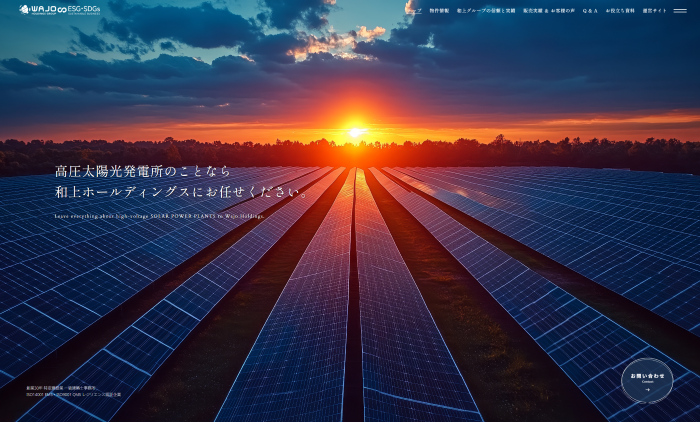
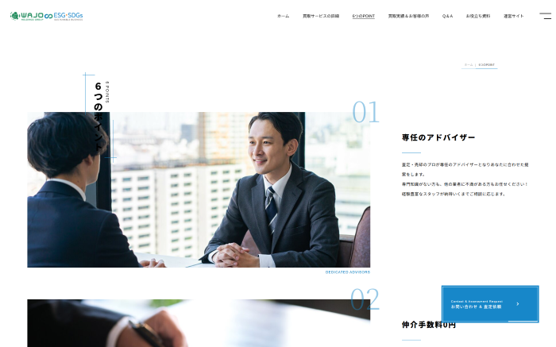
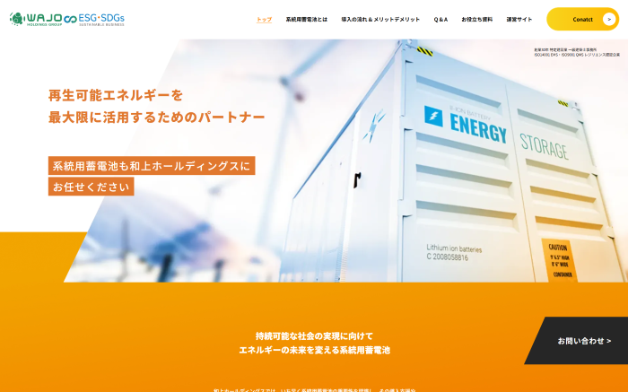
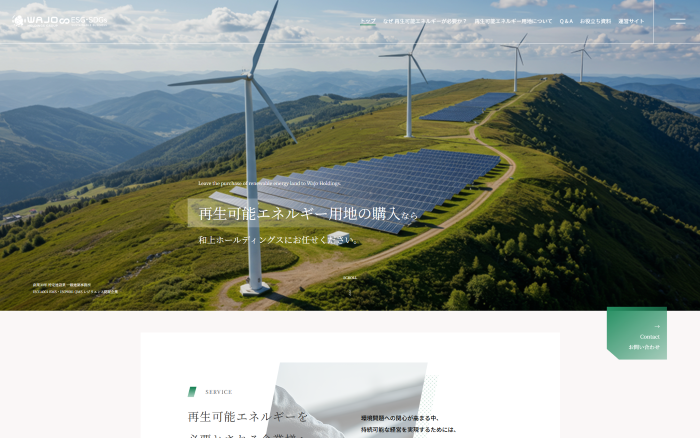
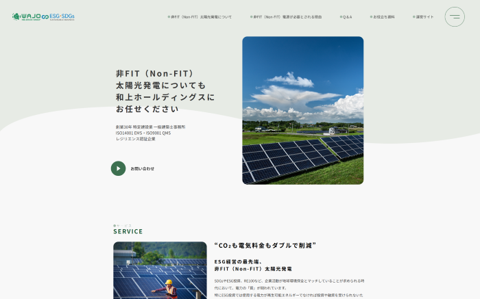
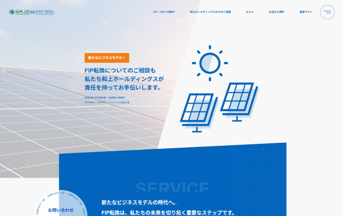
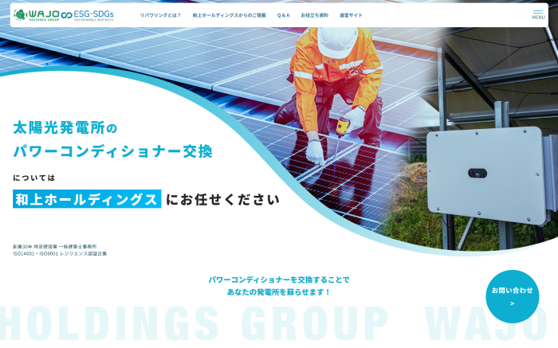

WORK 01 / FRONT-END IMPLEMENTATION
Webサイト実装
支給されたデザインをもとに、WordPress構築・コーディング・レスポンシブ対応を担当。
PROJECT OVERVIEW
デザインデータをもとにWordPressでのページ構築、HTML・CSS・JavaScriptによるコーディング、動的表現の実装、スマートフォン対応まで一貫して担当しました。複数のサービスページで、デザインの再現性と各デバイスでの閲覧性を意識して実装しています。
SITE 01
サイト 01
DESIGN PROVIDED / FRONT-END IMPLEMENTATION
https://eco.wajo-holdings.jp/high-pressure-sales/ ↗

SITE 02
サイト 02
DESIGN PROVIDED / FRONT-END IMPLEMENTATION
https://eco.wajo-holdings.jp/high-pressure-purchase/ ↗

SITE 03
サイト 03
DESIGN PROVIDED / FRONT-END IMPLEMENTATION
https://eco.wajo-holdings.jp/battery/ ↗

SITE 04
サイト 04
DESIGN PROVIDED / FRONT-END IMPLEMENTATION
https://eco.wajo-holdings.jp/land-purchase/ ↗

SITE 05
サイト 05
DESIGN PROVIDED / FRONT-END IMPLEMENTATION
https://eco.wajo-holdings.jp/nonfit/ ↗

SITE 06
サイト 06
DESIGN PROVIDED / FRONT-END IMPLEMENTATION
https://eco.wajo-holdings.jp/fip-conversion/ ↗

SITE 07
サイト 07
DESIGN PROVIDED / FRONT-END IMPLEMENTATION
https://eco.wajo-holdings.jp/repowering/ ↗
